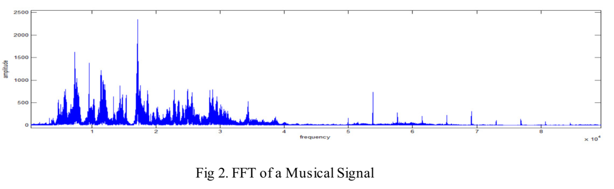
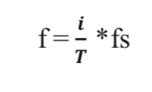
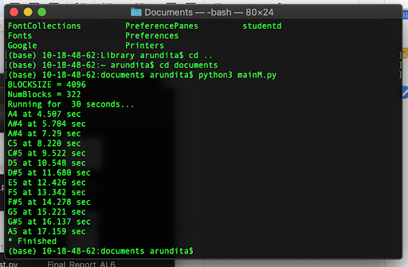
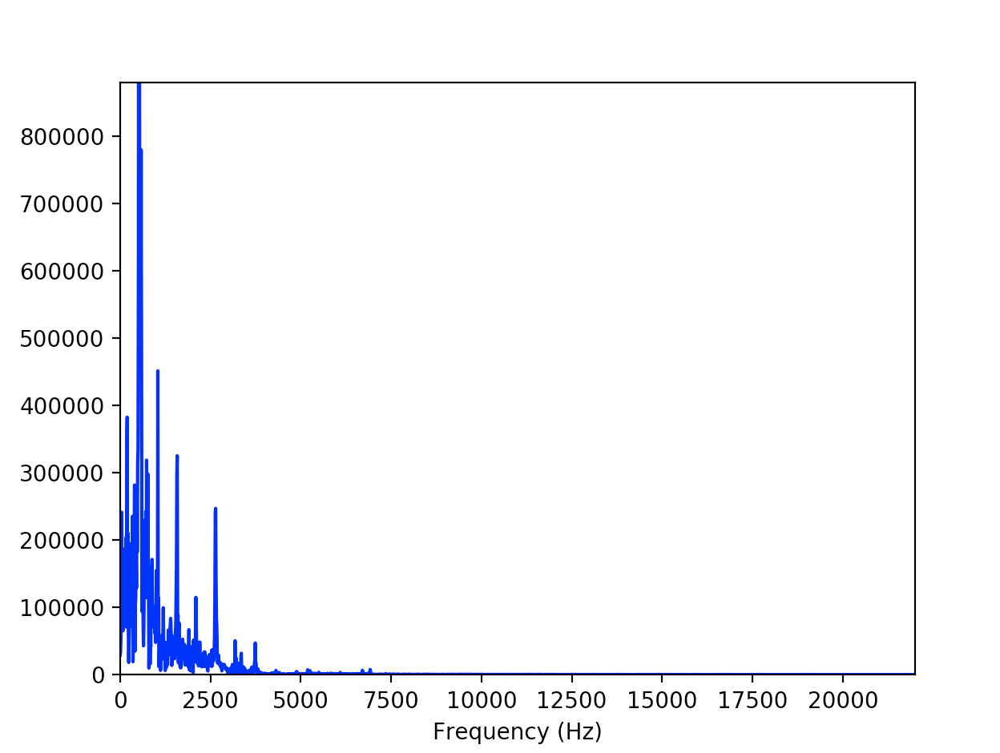

Musical Note Identification using DSP
Abstract
This project presents a method to perform musical notes recognition from live signals such as notes played form guitar, keyboard or flute using frequency spectrum analysis. Human vocal sounds can be analyzed with classical Fourier transform, however musical sounds are time varying signals occupying a wider band of frequencies as compared to human voice signals and cannot be sufficiently analyzed with classical Fourier transform techniques. Such a tool can be very helpful for an amateur learner who wants the keystrokes for a song or for an experienced player to train ears to identify various sound pitches.
Introduction
Retrieving musical information from a live or recorded performance is a highly non-trivial information that is highly desired by in various operations in a prompt, precise and self-regulating manner. We have developed a software system that accepts a musical note in the form of a digitized waveform from a live music input and obtain the frequency of the note from that signal. We have implemented this by using event detection and pitch identification, where notes are identified from the pitch frequencies which is different from each and every note. Our algorithm performs signal processing in time and frequency domain to correctly identify the frequency of the musical note.
We aim to design and develop a software system that could accurately analyze a signal and provide the features of the signal to assist musical composers, djs, remixers etc.
Literature Survey
Pitch is the term used to describe how high and low sounds are. It's the frequency at which a particular note is perceived to our ears. Pitch detection is one of the very hard challenges of DSP domain and our project strives to do that when provided with suitable constraints. The frequency of a pitch is measured in Hertz. One hertz is defined as one cycle per sound. Fro e.g. Note ‘A’ in the fourth octave cycles at 440 times hence it is 440 Hz.
As mentioned above, all notes have a characteristic pitch frequency. Musical notes form harmonics where each note repeats after a cycle of 12 notes and this is known as an octave. Our projects implements notes detection from the fourth and fifth octave.
Fourier transform a technique use to generate a histogram of all the frequencies occurring a block of samples. Thus, using suitable analysis, pitch, smoothing, and other musical characteristics can be distinguished by fourier transforms. Fig below shows the FFT of a musical sample and is taken from the Musical Notes Identification.

The peak frequency component can be obtained via the formula below

Where,
i is the index of the maximum amplitude and,
T is the total number of samples at a time T
Preliminary Analysis/Methodology
We have performed our experiment on live music input by utilizing the pyAudio library. As we press a key on the piano, our algorithm outputs the frequency of that particular note. Our algorithm can be broken down into the following steps:
Thresholding:
We have implemented our system using constant thresholding as our input is live musical notes obtained in real time. The optimum threshold value was found by trial and error.
Width Selection:
We have used the width of block size 4096. This is because the size of 4096 is large enough to give higher resolution of different characteristic frequencies for each and every note. The width is small enough to have a very small output lag.
Finding Instant:
As we press play a note, the frequency of the note is calculated and displayed with the timestamp at which the note is played in real time.
DFT analysis:
Using the fast fourier transform, we are obtaining the histogram of all the frequencies present in a block. The frequency with the highest amplitude is assumed to be our fundamental pitch frequency. This method has a few errors because the harmonics of the fundamental frequency are also present in the frequency spectrum which we identified as false positives.
Assignment:
Since we are identifying notes only from the fifth octave for this project, we are restricting the identification to only those frequencies. This helps us to eliminate the harmonics form the higher or lower octaves.
Time domain analysis:
Since the duration of the notes played can be more than the samples in the block size, repetition in the same notes may be logged. To remove this, we are disabling the identification of the same note for a particular time period. For this time period, for piano was found to be 200ms by trial and error.
Simulation results
Fig 1. Shows the different notes identified and time-stamped by out application. This proves the correctness of our algorithm.

Fig. 3 shows an FFT spectrum when a chord is struck. Using this, we determined a good value of threshold and delay for out project

Conclusions
In this project we have developed a software system that identifies the frequencies of a piano song “Happy Birthday” is identified and corresponding notes are identified with timestamp of the notes shown in the project video. Our project implements real time analysis of sound samples and outputs very accurate results. We have gathered the desired results by varying the parameters such as threshold value and width and makes our a great assisting tool for learning to play a musical instrument.